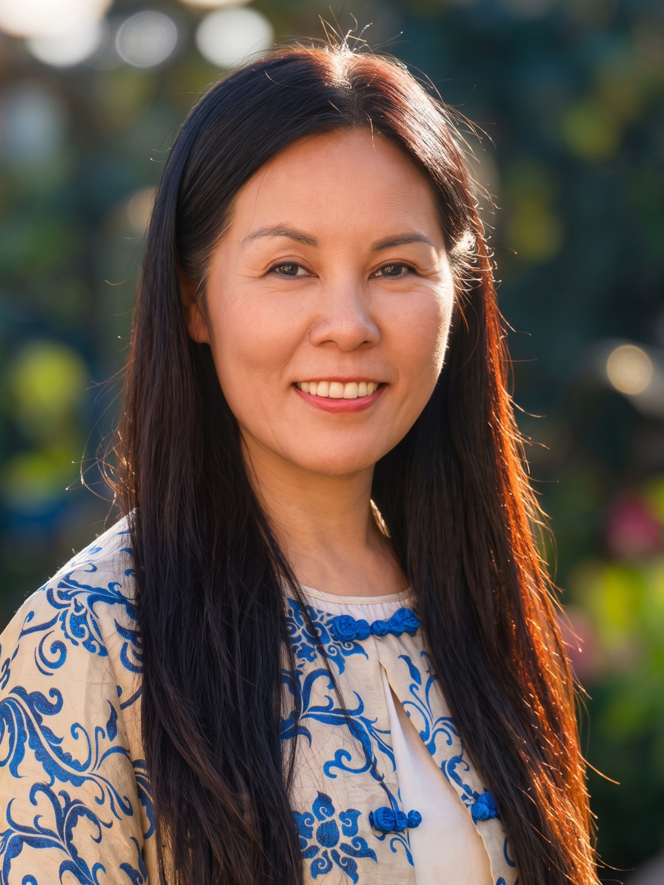
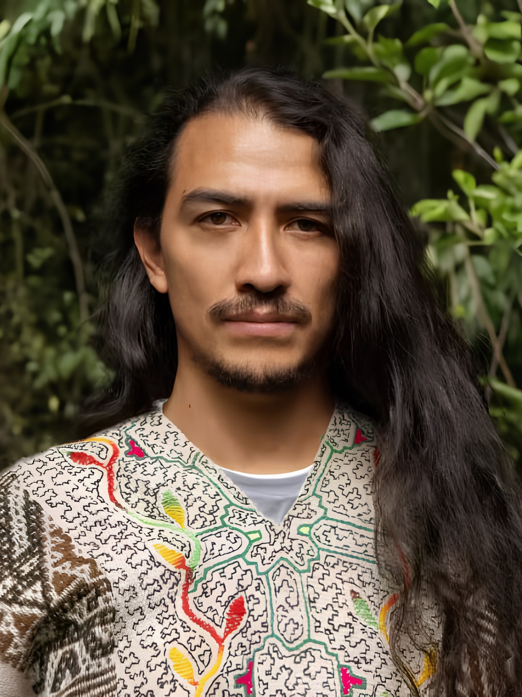

Preparation
Participants received context, participation requirements, and practical guidance before travelling.
This page preserves the factual public record of the October 2026 gathering. Registration and payment for this retreat are closed.
The public programme described preparation before arrival, three guided plant-medicine ceremonies, embodied practices, shared meals, time in nature, rest, reflection, and guidance for the return home.
Participants received context, participation requirements, and practical guidance before travelling.
Ceremonial work was presented within a wider rhythm of embodied practice, nourishment, and rest.
The published format emphasised questions, boundaries, informed choice, and care within the group.
The final phase created space to reflect and prepare for returning to ordinary life.
This archive describes the roles published for the completed October gathering. It does not imply the same team or format for a future retreat.

Stephanie was presented as supporting the reflective, energy-awareness, group-field, and integration dimensions of the gathering.

Hanan was presented as a Quechua lineage holder and ceremonial guide bringing Amazonian and Andean plant-medicine traditions.
No participant quote, identity, image, or claimed outcome is published here without the source material and permission to use it. The gallery structure is ready for the content Rainbow Sanctuary is now collecting.
Approved images can be added with accurate captions and alternative text once supplied.
Future reflections will be attributed and edited only within the permission granted by each contributor.
The next seven-day, six-night retreat is planned for 3–9 December 2026. Venue, programme, investment, and booking details will be published as they are confirmed.